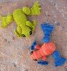

|
||
Premium Patterns Wintry Mix Mitts Love Bytes HawkeyeFree Patterns Kiddie Cadet Summerlin Ruffled Scarf Seamless DS Sock Simply Seamless Pouch Myriads of MushroomsExtras DIY Mitten Blocker Felt Patch Tutorial Yarn Dyeing Tutorial Needle Pouches Knitting Journal |
March 06, 2008 - Posted by Alice SchneblyDendrobates MalabrigiProject Specs I had been wanting to knit up this pattern ever since I saw Jen’s cute little frog Nate awhile back and I decided I would make one using Malabrigo this month. I had planned on making a cute green normal frog, but when my Malabrigo order arrived and I saw all the pretty colors, I couldn’t resist playing around a bit! After doing some searches on Flickr, I decided to make a Golden Poison Dart Frog (Phyllobates terribilis) and a Strawberry Poison Dart Frog (Dendrobates Pumilio). Though these are certainly bigger than life-sized (the Strawberry Poison dart frog only measures 2 cm in real life!), I would definitely prefer holding my knitted Malabrigo froggies to the real thing—all the cuteness without the poisonous secretions. This pattern was well written, error free, and fun to knit. I only changed a few things to fit my personal preferences. I picked up the stitches for the front legs and worked the hind legs and the feet in the round to eliminate the seams. This was an easy adjustment to make, I just doubled the cast on number for the legs and worked each side on a separate DPN. I truly despise seaming so I’ll really take any steps needed to eliminate it. When I got to the ends of the feet, I joined the ends together with a three needle bind off while also working a picot bind off to make the webbed feet. This is how I ended up making the toes on the back legs of my frogs. At the end of the back feet you’ll have 12 stitches on each DPN. Cast on 3 stitches, bind off 7 stitches (making sure to knit the front and back stitches together when applicable), return the last stitch to the left needle. Repeat twice more until only one stitch remains on your right hand needle. Cast on 1 stitch to right hand needle, pass other stitch over new stitch. Repeat twice more and pull yarn through the last stitch.  For the front legs on the Golden Dart Frog, I worked the picot bind off as directed, but added an extra toe by casting on one stitch, and passing the last stitch over two times. For the front legs on the Strawberry Dart Frog, I started by picking up 6 stitches rather than 9, and increasing to 9 after working 6 rows. I also switched colors after the increase round and worked 8 more rows before beginning the feet. This gave the frog a bit longer and slightly different shaped leg. One of my favorite additions to these frogs was to put pipe cleaners to all their legs. It made it easy to bend them exactly where I wanted them and pose them in different ways. I love being able to play around with knitted toys! In fact my little frogs are perched on top of my computer monitor staring at me with their big eyes right now waiting for me to play with them some more! These guys are the second and third things I’ve completed for Malabrigo March and I couldn’t be happier with how they turned out. I really would love to make more someday, and I’m thinking of knitting them a big toadstool to hang out on! |
   Recent ReviewsRecent Posts
 Our Favorites
|
| © 2007 KathrynIvy.com | ||
{kind=link}
{kind=link}